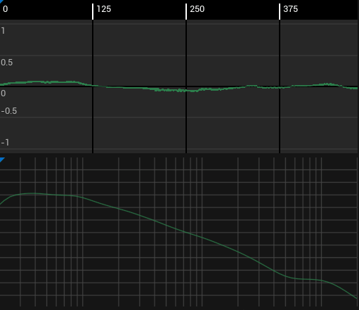
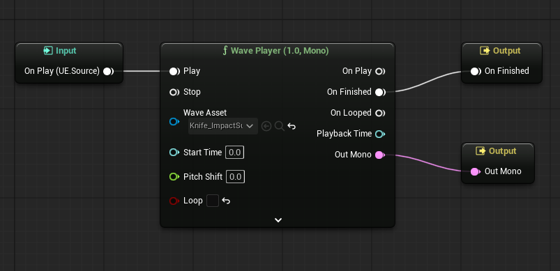
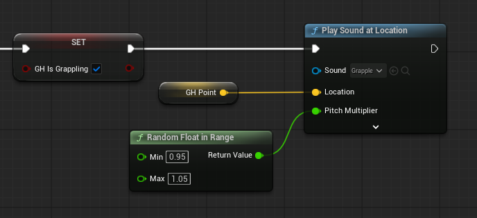
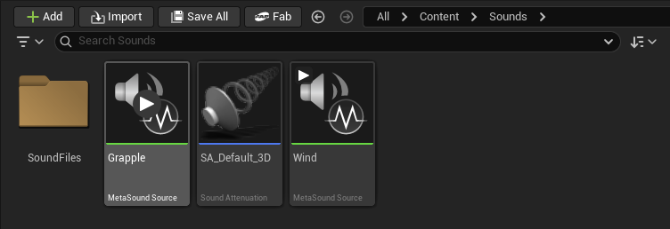
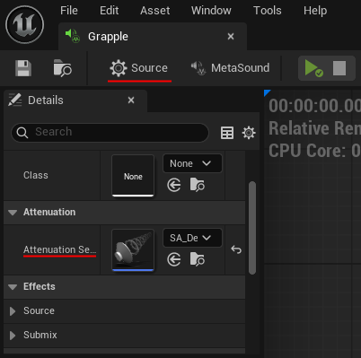
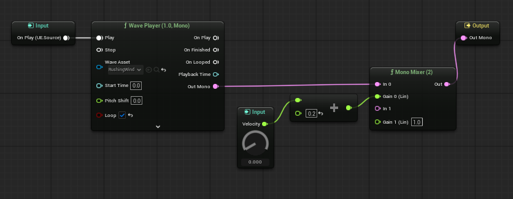
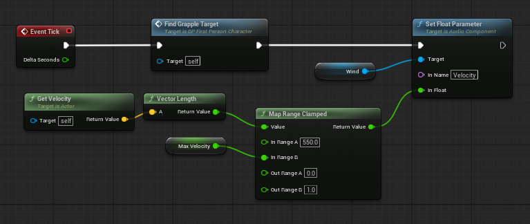

Unreal Engine vs Unity
Sound Effects
How to add sound effects in Unreal Engine (and why it's both easier and harder than Unity).
Sounds in Unity
In Unity sounds are played through AudioSource components placed on objects. Each sound effect is turned into an AudioClip when it's imported, and an AudioSource can only have one clip at a time, meaning you need multiple AudioSources to play multiple sounds (assuming you aren't using specialised plugins). You also need an audio listener on the camera, and different audio mixers can be assigned to each AudioSource to control volume.
My go to for managing sound in Unity is to create a Sound-Manager script that has a list of sounds it can play, each with their own settings for things like volume and random pitch variation (a super useful trick for making frequent sounds less repetitive). I then have one AudioSource and Sound-Manager per object that can make sounds, and call simple functions in the manager from the code to automatically change the clip and settings.
Some of these systems took a while to fully unpack, so I would say while creating simple sound effects in Unity is quite intuitive, more complex effects basically require a custom or third-party solution.
Sounds in Unreal Engine
Right off the bat sounds in Unreal Engine feel a bit more complex: sound files are converted into 'sound waves' on import - similar to Unitys clips - and another asset called a MetaSoundSource is recommended to define settings for your sounds. MetaSounds in the content library are effectively blueprints (prefabs) which can be used to create or setup the objects that make sounds.
Any time a sound is played in UE a MetaSoundSource needs to play it, but existing functions like 'create/play/spawn sound' can automatically create the Source for you, either from a MetaSoundSource asset, or directly from a sound file. These are automatically deleted when finished (if set up correctly - looping or otherwise repeating sounds should be made into components so they can be managed more carefully).
MetaSoundSources have a lot more functionality and customization available than Unity AudioSources, and this is both a good and a bad thing: Having full access to node-based audio generation and mixing software is obviously amazing, but the process of adding simple sounds is a lot more involved (and easier to make mistakes in) because of it. While there are nodes for playing sound files directly as mentioned, doing so is not the intended way to implement sound, and has limitations like not correctly handling loops.
MetaSounds
MetaSounds function quite differently from anything in the standard Unity kit. Where AudioSources can only have one Clip playing at a time, MetaSounds can take from multiple sound files or even procedurally-generated noise, and use a huge range of options to mix them together before giving a final output. They can also use input parameters to adjust sounds from code, and because of these I would say they are more similar to Unitys animation system than anything else.
The minimum required to get a MetaSound working is to create a wave player node and connect the 'on play' input to the 'play' pin, then the 'on finished' pin to the 'on finished' output and the 'out mono' pin to the 'out mono' output.
While it's just a single node with common sense connections to the three pre-existing input and output nodes, it's probably still more than I could have figured out without a tutorial. It's also hard to know why each of these nodes has been connected - so let me try to explain:
- Input (On Play): Inputs to MetaSounds can be either events (like start or hit) or data (like speed
or health) given to it from code. Events usually happen when something starts or stops. In this case
the code needs to play the start of the sound file when the MetaSound is created or started.
- Nodes like sine waves or noise functions don't need a start event because their output is independent of when they started.
- Output (mono or stereo): Connecting something to this is the minimum needed to make a MetaSound work. It's pretty intuitive - whatever is connected to this pin is heard when the sound is played, be that a file, generated sounds, or a mix of multiple sources.
- Output (Finish Event): This is an event that the MetaSound can generate, which is used mainly to destroy temporary audio sources when the sound finishes playing. Looping sounds should not have the on finished output, and for these you should delete the 'on finished' output, and assign them as a component on the object that controls them.
Basic Setup and 3D Effects (Attenuation)
There were two main sounds I wanted to add to my grappling-hook project:
- A 'Grapple Connected' sound - partly to help players know when they've missed their target.
- A 'Rushing Wind' effect that would get louder the faster the player went to give a more visceral feeling of speed.
The connected sound was very easy - after the connection succeeds in the code, add a single 'Play Sound at Location' node and hook in the position of the connection point.
The tricky part for this sound was setting up the 3D effect - where the sound is quieter when the connection is further away. In Unity the 3D settings are quite easy to use, with nice graphs and sliders baked into each component, while the hard part would be putting the sound in the right place. In UE this is reversed - putting the sound in the right place requires a single node, while the 3D sound settings require an attenuation asset.
The Sound Attenuation asset is used like materials are in unity - requiring an asset which can then be used for multiple sounds. To use them, you first create the asset by right clicking then selecting 'sound' then 'sound attenuation'. The default settings are good for a typical 3D sound, but things like falloff distance, reverb and occlusion can be edited by double clicking.
The attenuation can then be applied to a MetaSound by opening the MetaSound, clicking the 'Source' button in the top left, and finding the Attenuation section and picking the asset you made.
Parameters and Looping
Making the rushing wind effect is more complicated. We need to set the sound up specifically to let it loop, then add an input parameter and use it to adjust the sound, and finally we need to change update the parameter with the players velocity each tick.
To set the sound up to loop, first create a MetaSound and delete the 'On Finished' output event. Next, add your sound effect with a wave player node and check the 'looping' option. To play a looping sound, create an 'AudioComponent' variable in your code to keep track of the sound with. You can then either create the sound in code when it needs to start (e.g. 'Spawn Sound Attached') or add a dedicated component, choose the right MetaSound in the details menu and just play it when it needs to start.
Next, add the velocity parameter to the MetaSound by opening it and clicking the plus icon next to 'inputs' in the top left - then drag the input into the blueprint area. To make it effect the volume, add a Mono Mixer (2) node (designed for combining two sounds, but it will work with just one), then connect the output of your wave player node to 'In 0' and the Velocity parameter to the 'Gain 0' pin. You may want to add some maths nodes in between to define the effect better (for example clamping the min and max).
Changing Parameters from Code
As mentioned earlier, MetaSounds function similarly to Unitys animation system - and this is also true for changing their parameters from code. In this case, choose the 'Set Float Parameter' node from the list of set and get functions that exist for each of the many parameter types. Connect it to 'Event Tick', and carefully type (or copy) the name of the Parameter to the 'In Name' pin. Finally, add code to get the velocity of the player, and add a 'Map Range Clamped' node to normalize the velocity and more finely control the volume.
Note: MetaSounds are a beta feature that may still have bugs. When testing parameters in my project they would only update at the start of the sound, then after a long few hours of confusion of frustration they inexplicably started working with the same code and setup.
Conclusion
Creating SFX in Unreal Engine was a little frustrating at times, but after getting over the speed-bumps I'm now excited at the possibilities they offer: Wave and noise generation will be super useful for creating simple sounds without searching online, the mixing and live editing tools should make it much easier to create a professional soundscape, and the parameters will make it really easy to add dynamic and interactive sounds (assuming the bugs get fixed).